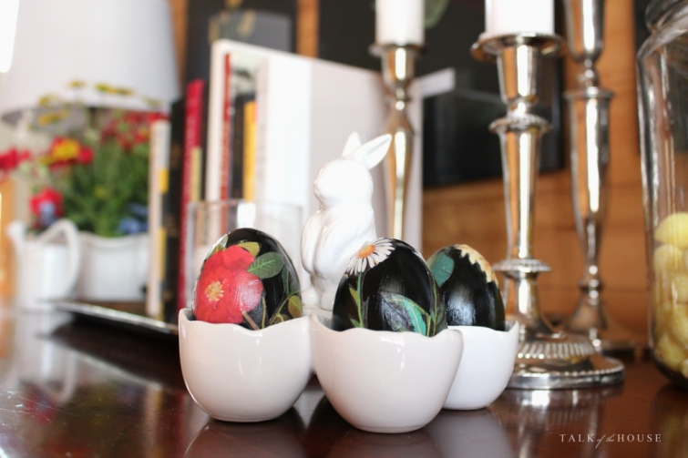
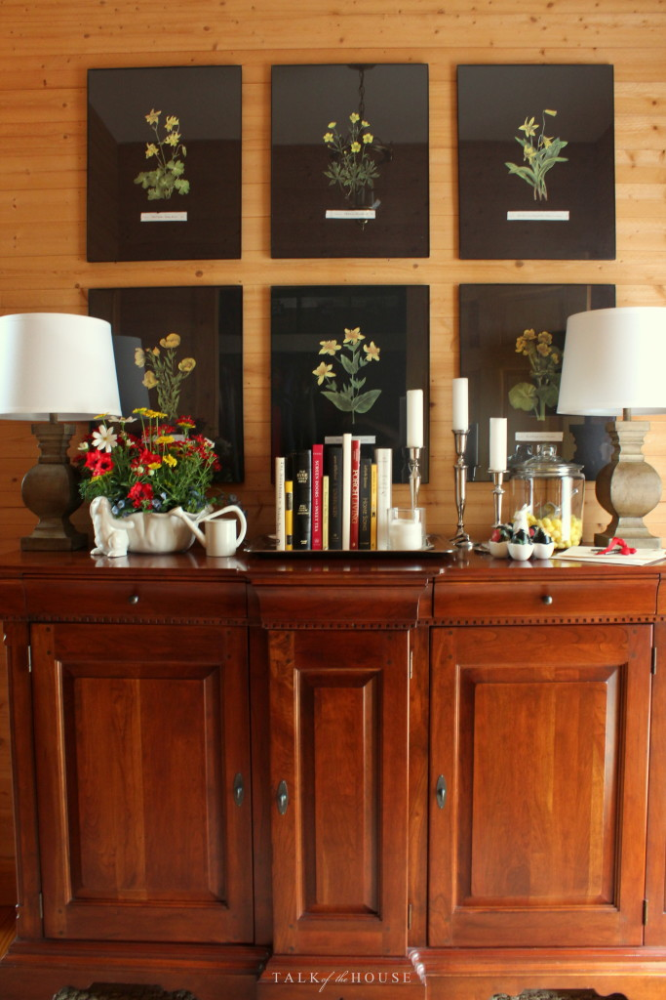

.png)
.PNG)
.PNG)
.PNG)
.PNG)
.PNG)
.JPG)
.JPG)
.PNG)
.PNG)


Welcome! We have arrived at the last day of Marty’s amazing Spring Home Tour for this year.
I am quite humbled and excited to be a part of this group of creative women.  I know everyone has begun their tour this week with a thank you to Marty for hosting this, and I would like to do the same.  It is a LOT of work to coordinate something like this, and we are all very grateful to her for the efforts she makes in bringing these fun events together.  🙂
If you are here as a first time visitor coming from Far Above Rubies, let me say an extra welcome to you!  I hope you enjoyed Anita’s wonderful mix of old and new.  She is not only a talented decorator, but also a talented musician.  It just blows my mind how small this world is.  Anita worked with the Air Force Reserve Band at Robins Air Force Base….the base that is about a 20 minute drive from our home here in Georgia!  Isn’t that amazing?! 🙂
 And welcome to my regular reader friends too. I’m so glad you are here for the tour today! Have you noticed the big change in the foyer? Â Normally there are large black and white photos of our children there. (We have 3 almost-grown children.) Â The new botanicals aren’t permanent…my husband doesn’t really care for them, but I have to tell you how these came to be…and really how all the spring decorating came to be.
And welcome to my regular reader friends too. I’m so glad you are here for the tour today! Have you noticed the big change in the foyer? Â Normally there are large black and white photos of our children there. (We have 3 almost-grown children.) Â The new botanicals aren’t permanent…my husband doesn’t really care for them, but I have to tell you how these came to be…and really how all the spring decorating came to be.
I’m going to blame it all on….Pottery Barn. Â Yep. Â When their spring line started showing up in their catalog, I fell in love with a certain set of plates.
These Poppy Botanical ones.
I loved the big red flower against the black and the fact that the other plate in the set had yellow flowers. Â (I used red and yellow for last Easter’s decorating.) Â PB even has fabric, and throw pillows, and duvet covers, and mugs, and a gorgeous wall hanging all in this print. Â So I purchased the plates. Â (You’ll see them when we get to the dining room.) And I decided I really wanted to use yellow with black this year for Easter…not a traditional color combination for the holiday. Â (Although I usually prefer traditional decor, I don’t always go for traditional colors.)
 To start the theme right from the front door  I decided to make my own botanicals.  I had an old book with botanical prints in them.  I copied several pages and meticulously cut out the plants.  (Each one took about 45 minutes to cut.)  Then I mounted them on black cardboard, and viola!  I had my new pictures.  I know you can’t tell from your screen, but they really do look like pressed flowers in person.
And then…you won’t believe this… I ran across this blog post. It told about botanical Easter eggs (truly!) and the work of 18th century paper artist, Mary Delany – who made paper collages of flowers…hundreds of them.  (You might want to read Molly Peacock’s book about her called The Paper Garden.)  The blog post told about painting flowers on the black eggs, but I decided I would have better luck with decoupaging them.  So I became friends with mod-podge and used it to glue some flower prints on some inexpensive black Target $3 bin eggs.  It worked beautifully don’t you think? 🙂
Now let’s go in the family room. Â My husband built the bookshelves in there when we built our home here 20 years ago. Â The cabinet there in the corner holds even more books. Â Can you tell our family likes to read?
Here is what is on that cabinet for spring. I simply put plain decorative eggs in the jar there with some paper shred.
Like many people today, I prefer neutral colored walls and upholstery so that I can change out pillows and accessories easily. Â Currently, the sofa is wearing yellow and black throw pillows…
and a new lumbar one from Pottery Barn…
(Yes, from the botanical line.)
And the armchair by the fireplace has another pillow also from that line.
(Those flowers seem to be popping up everywhere!)
For our spring mantel, I used more botanical prints in our old frames and planted yellow blooming flowers in an Easter basket-type container (lined with a ziplock bag.) Â Then I added a couple of forsythia branches for some height. Â It has kind of a free flowing wildflower look to me.
Now let’s go into the dining room where those plates are that started the whole shebang!
I mixed those new Pottery Barn botanical plates with the yellow banded Kate Spade plates I purchased at Home Goods last year.  The napkins are actually kitchen towels from Sur la Table (currently on sale. 🙂 )
Each place setting has one of the decoupaged eggs and a bunny holding a He is Risen place card. Â I think all the black works well for the solemness of Good Friday today, and all the bright colors celebrate the risen Lord for Easter.
The center piece is a jumble of red, yellow, and white spring flowers planted in one of my soup tureens.
I even found yellow flower cookies for the jar on the dining room’s antique cupboard. 🙂
Here’s the view to the opposite side of the room. Â My husband also built the cabinet there in the corner.
And now one last look before we go into the kitchen.
Our island/peninsula (also built by my husband) is our baking center. Â It stands where a wall once was. (You can read about that here.)
My kitchen desk has a chalkboard with a recipe for an Easter bunny cake.
Oh! Â I forgot to tell you that I traded out the drapes for the black and white buffalo check ones that had been in the room over the garage! Â How in the world did I forget that?!
And finally, the other side of the kitchen with all the hot beverage supplies….wearing their black and yellow. 🙂
I really tried hard to get the whole tour in this one post, but it would have been waaay too long.  So hop over to Kim’s Tidbits and Twine to see her beautiful French country styling.  (I believe a statue is making its appearance there today. 🙂 )  And then come back here for part 2 of my tour some time this weekend (hopefully!)  If you missed any of the posts in this week’s Spring Tour, here is the whole line up for you:
Monday –Â March 21
A Stroll Thru Life– Marty
Cuckoo4Design– Julia
Life on Virginia Street– Sarah
Thrifty and Chic– Alicia
Snazzy Little Things -Jeanette
Rain On A Tin Roof– Jenna
Tuesday –Â March 22
Making Home Base -Chelsea
Claire Brody Designs -Claire
Driven By Decor– Kris
Eleven Gables– Emily
Bliss @ Home– Kristin
Hymns & Verses– Doreen
Wednesday –Â March 23
Style Your Senses -Mallory
Our Southern Home– Christy
Simple Details– Pam
Decor To Adore– Laura
Monica Wants It– Monica
21 Rosemary Lane -Barbara
Thursday –Â March 24
Decorating Delirium– Jennifer
Simple Stylings– Summer
Remodelando La Casa– Cristina
Life Love Larson– Andrea
Our Fifth House -Carmel
No Minimalist Here– Sherry
Friday –Â March 25
Dimples & Tangles -Jennifer
 Refresh Restyle– Debbie
Far Above Rubies -Anita
Talk Of The House– Kelly
Tidbits & Twine -Kim
It All Started With Paint– Linda
Until next time…


.PNG)
[…] Talk Of The House […]
I couldn’t help but notice your countertop. Did you make these yourself? I love wood counters and would like to make some if possible. Lovely home and I especially like the buffalo check!
———————————————————————
Hi BJ! Yes, my husband built the countertops from pine shelving boards. They have quite a few coats of polyurethane on them to help protect them from water. I’m so glad you like them and the buffalo checked curtains.
Have a great weekend!
Kelly
Very pretty!! The botanicals in your entry make it look so different. How pretty the eggs are also. You always have such a lovely home…the kind of lovely that isn’t off limits, but welcoming your readers and real life visitors in!! Thank you for sharing!! I’m always inspired. 🙂
I say this rarely, your home is a lovely mix of beauty, comfort, character and unique. I thoroughly enjoyed my wee moment visit and thought to myself how nice I felt having been your guest just in the Internet way — imagined then all those graced to truly experience it in person. Sigh… thank you
[…] Talk Of The House – Kelly […]
[…] Talk Of The House– Kelly […]
Beautiful! I love all of the black and white accents….. duh…..!!! Can’t believe the work that went into the black botanicals! They look great!
As always, your home looks beautiful and so welcoming Kelly. Wishing you and your family a very happy and peaceful Easter.
Rosemary
love your house as always. It looks so different without the reds. love the new floral pillows. they look great with the black touches and neutrals.
How pretty! I wouldn’t have thought of using black with the pops of red and yellow. Your flower centerpiece was perfect! You are so clever! Of course, you can never go wrong with inspiration from Pottery Barn! (I went to the Pottery Barn Outlet yesterday and was disappointed that they had almost no Easter items left. Oh, well, maybe in their regular stores.) Happy Easter, Kelly! And, great job!
LOVE LOVE LOVE YOUR HOME!!!!! And you know what? I also love to see COLOR in your home – it’s so comfortable and welcoming! Happy Easter to you!
Oh my! Those pops of yellow in the kitchen are melting my heart! And crushing on those plates. I don’t know if it is the poppies, the yellow flowers or just the black background. What a stunning color combination! So enjoy the eye candy you share! Happy Easter to all at your home!
Happy Easter Kelly!
Love those plates, they really pop! And your botanical prints are great. While I did like seeing your kids’ photos there, I like this look for a change too! You always do a great job on your decor and tablescapes, and never disappoint. I love how black can set things off and make it jump into an almost 3D look.
Have a wonderful weekend!
[…] Talk Of The House– Kelly […]
This is a really different look for you & I love it! Not that I don’t love your usual look, but this is a fun, fresh take on it! I’ll be pinning several images — I’m just in love with the black matted botanicals. You hit it out of the park again!
Kelly, how beautiful – everything is so perfectly coordinated! Love the botanical prints in the foyer, the eggs, plates, everything. Your husband’s wood working skills are such a blessing. I, too, love books and have them in every room of our home but oh how I would love built-ins 🙂 Thank you for part one of the tour. Looking forward to more!
Kelly, I have to politely disagree with your husband because I LOVE your botanicals with the black background – they are absolutely fabulous!! I love your house just a little more every time I see it – it’s one of the few that I could move right into and not change a thing! I do have a question for you – where did you find the oversized buffalo check fabric – I’ve been looking for some and having a surprisingly hard time finding it!
—————————————————————–
The black and white buffalo check fabric was from Ikea….a steal of a deal at 60 in. wide for $9/yard. It is a wonderful heavyweight fabric – almost polished cotton.
Thank you for your very sweet compliments on the house. I love yours too! Perhaps we could do a house swap for a vacation sometime! LOL
Have a great weekend. 🙂
Kelly
Oh my gosh, Kelly! I always enjoy your beautiful tours, but especially this one!! You’re not going to believe this, but we created black botanicals from Mary Delany’s artwork for my friend/client’s kitchen!! Your eggs are fabulous, I just sent her your post, I know she’ll love it!
http://simpledetailsblog.blogspot.com/2013/09/diy-black-botanical-artwork.html
Happy Easter!
What a treat to tour your home! I love the botanicals in the foyer and those Easter eggs. Your entire home is so beautiful and cozy!
So pretty and cozy! I love how you personalize your house!
Happy Easter!
HelenLouise
Kelly,
I love the touches of black and the botanical prints in the foyer give the wall such a dramatic and lovely look! Sorry your hubby doesn’t like them.
The plates, pillows and floral bouquets are one of my favorite spring touches in your pretty home.
Happy Spring!
Karen
Kelly, I love your home anyway you decorate it but this is such a different change. But I love it! Its just so bright and different and looks great in your home. One thing leads to another , doesn’t it!
OMGOSH !!!!!!!!! I am in LOVE with that botanical plates !!! I LOVE the black, looks absolutely gorgeous in your home!!!
Just gorgeous! I love all of the black with punches of bold color…it’s my favorite color combination! And I love the classic wood furniture pieces along with the bright color. Love your style 🙂
I enjoy your blog! I love your sideboard. Would you be so kind to tell me the manufacturer. Thank you. Happy Easter.
——————————————————————-
The sideboard is a Bob Timberlake piece that was made by Lexington furniture. I don’t think they make it anymore, but you might be able to find it on sites that carry discontinued pieces. Hope this helps!
Have a great weekend!
Kelly
I LOVE this room. Your spring decor is wonderful. I need a light fixture like the one over your table! Do you mind to share who it is?
———————————————————————-
Thank you so much for your compliments! The light fixture is made by Visual Comfort. Here is a link to the site where we purchased it: http://www.lightingnewyork.com/product/visual-comfort-e-f-chapman-classic-island-lighting-sl5816hab-np.html#que
Kelly
I LOVE the botanicals, both the prints and the plates. Beautiful, as always. Happy Easter!
I could hardly wait for your spring tour! When I saw Talk of the House listed for Friday, I didn’t think Friday would ever get here. It’s great! I love the botanicals and the color scheme you chose this year. Your decor is so refreshing, just like the season itself. I almost felt like I was actually stepping into each room, and your eye for detail never disappoints. Lovely, just lovely. On this melancholy day,
It has been uplifting and inspirational. Thank you, Kelly, and to have another post to look forward to is like spotting the chocolate bunny In an Easter basket.
Sherry
Wow Kelly, my goodness I LOVE the colors you have used! The rich wood also is so wonderful! Everything is beautiful!! Yes, I love WR and hope to get back soon to visit my brother and friends:-)
I would have never suspected red could be such a nice spring color; I really like it!
Kelly?
Is that you? Wow! That entry way is not what we are used to seeing! I do love it and the inspiration you took it from. The botanical prints do look like pressed flowers and the two pillows are divine. You really shocked me with the dramatic changes but I really like them. My favorite item is the white bunny plant holder in you entryway. That balances the traditional Easter decorating with the fun twist of red and yellow. I really appreciate the black being solemn and the pops of red and yellow being celebratory. Great job as usual. I can’t wait to see your next post. Thanks for sharing and take care.
Dawn
Oh, Kelly— how beautiful!! The dark background is so stunning! Truly makes a statement plus all the colors just stand out. Thank you on this Good Friday for a respite from all the hustle and bustle of cleaning/ decorating. My heart is always a bit broken on this day but then I look forward to the sunrise on Sunday and know that all is well because He is Risen–Indeed!! Once again, thank you for the blessings of your blog and always something to look forward to, sweet Kelly! 🙏💕💐🐰
Oh my….you have really outdone yourself. I always think you can’t possibly do anything better and then bam! I love this look. The plates are outstanding and your take on them is amazing. I love the botanical prints!!!!!! The buffalo checks are great too. I liked the others, but love love the buffalo checks. I have a feeling you will use these even more. It all turned out so well.
Oh my Kelly, I love your beautiful botanicals and to think it all started with such pretty plates. Gorgeous. The yellow and black is so pretty. Your home is one of my all time favorites and I love to see each tour. I will definitely be back for part 2. Thanks so much for joining us this spring, a true delight.
I think I have told you before, but it is worth repeating: Your home is one of my very favorites in blogland. I am an “outside of the box” kind of girl too, and I absolutely loved your spin on spring (instead of the traditional pastels.) I LOVE what you did with the entry way. How ingenious to make them look like pressed flowers! As always, every where the eye looks has special little touches. What a treat it must be to be invited to your home. Can’t wait to see Part 2. Have a blessed Easter weekend. Lori Lucas
I love all the flower prints!
Oh my goodness I just love your Spring tour, especially your flowers planted in the soup tureen and gorgeous table setting. And can we talk about those checkered curtains for a minute?! LOVE them!! It was great being on the tour with you and getting a chance to “visit” your lovely home!! 🙂 Kim
Love all the botanicals and the way you used black, red and yellow throughout the house. You are a wonderful decorator! Happy Easter to you and your family.
Kelly I too love the Botanical theme at Pottery Barn and I adore how you have made it your own. If someone said “I’m doing black for Easter” I would have questioned it but you are truly a magician and it looks fabulous.
If you have a chance I would love for you to link your wonderful tour up at Thoughts of Home on Thursday.
Happy Easter to you and yours!
You have a beautiful home. I love the use of the botanicals and the vibrant colors. And, your husband is quite the craftsman. We love built ins and shelves full of books! Glad to have found another Georgia blogger.
I never get tired of seeing your pretty house. Happy Easter to you!
I love the botanicals…a really nice change. I love the Pottery Barn plates also and am tempted to go and buy them but I have a fall set of plates, a Christmas set, a spring and summer set, a garden set, a very good outside set…soooo I think I need to be done getting plates. What I have been doing is just buying one luncheon plate of a pattern that I think I can’t live without and displaying it somewhere in the kitchen or family room and rotating. So far that seem to be working! Have a Blessed Easter.
Your house looks so perfect for Spring! I love the new botanicals in the foyer. I can’t believe you made them. Thanks for sharing. You gave me lots of ideas to try at my house. I always enjoy your blog. xoxo, Anne
Your home is just lovely all dressed up for Spring! Loved the tour!
🙂 Linda
[…] Restyle – Debbie Far Above Rubies -Anita Talk Of The House – Kelly Tidbits & Twine -Kim […]
What wonderful displays. You have such an eye for detail! I really like the neutral paint colour on your walls. We are going to be painting our den and I’m tired of the sage green walls. Do you know what paint your chose? -Jenn
———————————————————————–
Jenn, the colors may vary a little from room to room. Check out the FAQ page on the blog, and you will see all the sources listed there. http://www.talkofthehouse.com/the-house/
Good luck with your painting project!
Kelly
So pretty and I adore the black decoupage eggs. Genius idea
I know you are a talent woman but you blew my socks with the botanical prints, eggs, etc. I probably saw the plates in PB.
NOW I could go buy all they have left. What an inspiration you are to women who read this blog. Thank you, Kelly and Happy Easter.
I love your use of black and yellow! All the rooms look wonderful! Being from a Russian heritage, where Easter eggs are traditionally black with yellow and red, I see how I could incorporate those elements in this color scheme. You have inspired me! Thank you.
Wow! I love this! The black is so striking and unexpected against the flowers – my favourite is your botanical prints in the hallway. Gorgeous.
Happy Easter!
Love love love the botanicals (the cut-out pictures and decoupaged eggs are perfect). Black always lends weight and character to a room. Great post! Happy Easter.
Happy Easter Kelly. You have a lovely home. I never get tired of seeing it. Love the drapes in all the different colors.Your Easter table setting is wonderful.
What beautiful plates Kelly. I love all the flowers. It looks very Spring and all about new life. Happy Easter to you!